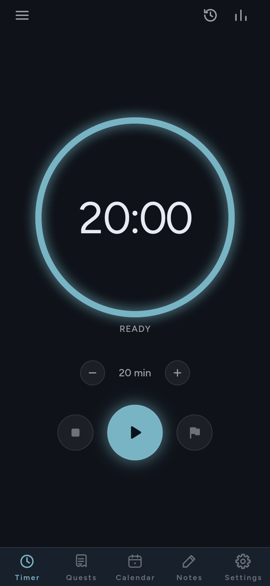
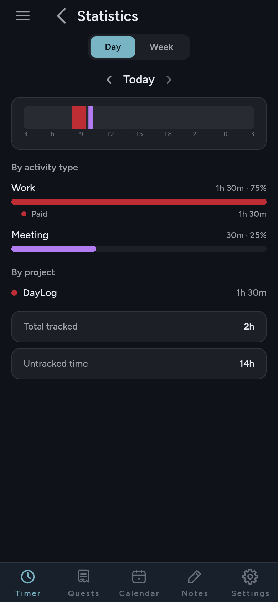
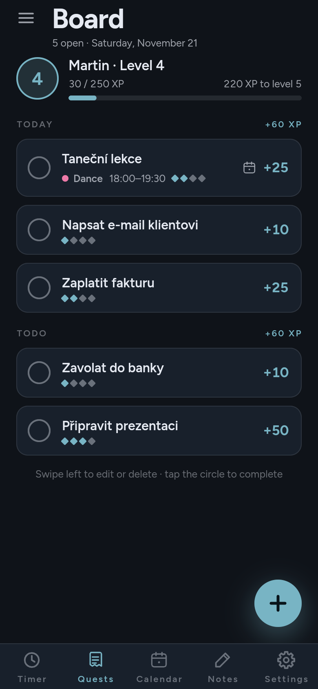
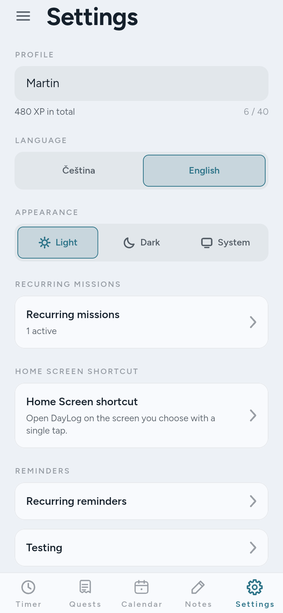
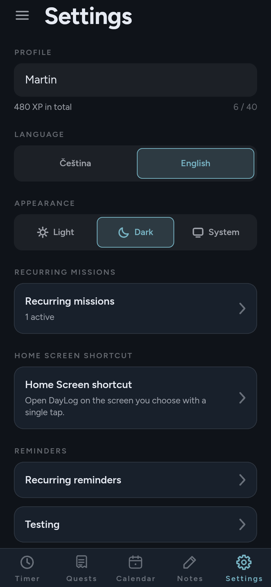
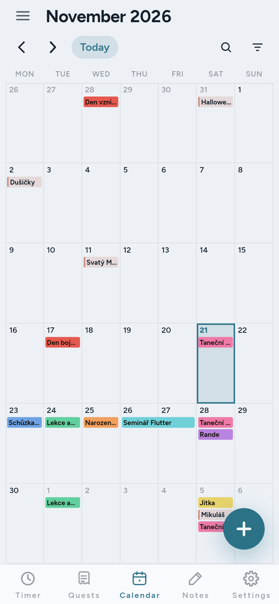
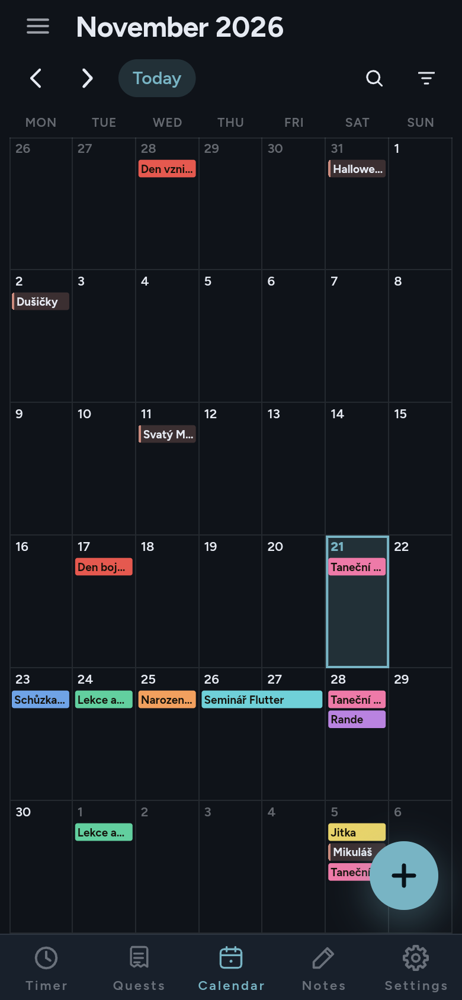

Co platí z prvního kola
| Obrazovka | Varianta | Úpravy |
|---|---|---|
| Časovač | Malá | Bez štítku „PŘIPRAVENO“, záře zůstává |
| Statistiky | Střední | Ostré hrany bloků v časové ose |
| Questy | Střední | FAB jen se znaménkem + |
| Kalendář | Malá | Hlavička ze střední, původní sheet dne |
| Nastavení | Střední | – |
| Spodní lišta | Malá | Všude stejná, bez tabletky |
Záře, varianta 1: ponechat a ve světlém zjemnit
Záře kolem kruhu, tlačítka play a plovoucího + zůstává v obou tématech. Ve světlém je užší a slabší (rozptyl 5 px, sytost 30 %), aby kolem kruhu nevznikal mlhavý okraj. V tmavém zůstává výraznější, protože tam záře přirozeně „svítí“.
Přepni nahoře Téma náhledů a porovnej obě varianty záře.
Drobnosti, které jsem doplnil kvůli jednotnosti
- Všechny hlavní obrazovky mají stejnou hlavičku: menu, titulek 22 px a akce vpravo. Časovač proto nově dostal titulek „Časovač“. Když ho nechceš, zmizí.
- Nástěnka a Kalendář mají stejnou titulkovou velikost jako Statistiky a Nastavení.
Pět obrazovek podle tvých voleb
Vlevo současný stav, vpravo nový návrh. Spodní lišta je zatím ta současná s pěti záložkami, jen ve stylu malé změny. Jak by vypadala po modulech, je v části B.
Časovač
malá změna

- Bez štítku stavu, kruh se stopou, ubývání je vidět od začátku.
- Záře zůstává, ve světlém užší a slabší.
- Délka jako jedna tabletka, vedlejší tlačítka s popiskem.
Statistiky
střední změna

- Souhrn nahoře ve dvou dlaždicích, Den/Týden v hlavičce.
- Bloky v časové ose s ostrými hranami jako v originále.
- Aktivity v jedné seskupené kartě.
Questy
střední změna

- Úroveň v tónované kartě s kruhovým postupem.
- Questy v seskupené kartě, obtížnost jako dílky, XP jako tabletka.
- Plovoucí tlačítko jen +, stejně jako v Kalendáři a Poznámkách.
Nastavení
střední změna

- Profil jako karta, jazyk a vzhled jako řádky s přepínačem.
- Čtyři logické skupiny s ikonami, hodnoty vpravo.
Kalendář
malá změnahlavička ze střední

- Velké buňky s názvy, štítky v tlumených odstínech, dnešek jako kroužek.
- Hlavička jako ostatní obrazovky: titulek 22 px, hledání a filtr vpravo, listování pod ní.
- Sheet dne zůstává. Jen dostal menší nadpis, tónované tlačítko zavřít a stejné zaoblení jako ostatní sheety.
Tloušťka nadpisu stránky
Stejná hlavička (22 px) ve čtyřech tloušťkách, které aplikace už má v písmu Figtree. Mockupy výše používají něco mezi 700 a 800. Dnes má aplikace titulek 700, ale ve velikosti 34 px, proto působí tak těžce.
Lehký, elegantní. Nadpis už nevyhrává nad obsahem a může se ztrácet vedle tučných názvů sekcí.
Moje volba. Pořád jasně nadpis, ale klidnější. Nejlíp ladí s iOS i Androidem.
Dnešní tloušťka, jen v menší velikosti. Výrazné, ale už ne křičí.
Blízko tomu, co jsi vnímal jako moc tučné.
Navigace po modulech
Aplikace se dělí na moduly: Časovač, Questy, Kalendář, Poznámky a Nastavení. Každý modul má ve spodní liště jen své stránky. Obě varianty sdílejí tenhle princip a liší se tím, kde se modul přepíná.
Moduly a jejich stránky · dnes a do budoucna
| Modul | Spodní lišta dnes | Možná později |
|---|---|---|
| Časovač | Časovač · Historie · Statistiky | – |
| Questy | Questy · Mise | Pravidelné (denní návyky: ranní cvičení, 10 min angličtiny) |
| Kalendář | Kalendář | Svátky a narozeniny blízkých |
| Poznámky | Poznámky | Diář |
| Nastavení | Nastavení (společné pro všechny moduly, skupiny podle modulů) | Pravidelné mise se můžou přesunout do modulu Questy |
Drawer s moduly
Tvůj návrh. Moduly se přepínají v draweru (hamburger vlevo nahoře nebo přejetí od levého okraje). U modulu jsou rovnou odkazy na jeho stránky, takže se na Statistiky dostaneš odkudkoli dvěma klepnutími. Moduly s jednou stránkou spodní lištu nemají.
Historie a Statistiky jsou záložky dole, z hlavičky zmizely malé ikony.
Moduly jako velké řádky. Aktivní modul je zvýrazněný, pod každým jsou jeho stránky jako štítky.
Dvě záložky: Questy a Mise. Pravidelné by přibyly jako třetí.
Bez spodní lišty, kalendář má celou výšku. Celkem dobře to vypadá, jen je pak jinde menu než u ostatních modulů.
Vyzkoušej variantu 1
Klepni na ≡ vlevo nahoře, vyber modul nebo rovnou štítek stránky. Záložky dole se dají přepínat. Obsah obrazovek je jen zástupný.
- Jednoduché, známé z mnoha aplikací.
- Drawer pojme libovolný počet modulů i stránek.
- Na libovolnou stránku jsou to dvě klepnutí.
- Hamburger je vlevo nahoře, kam palec na velkém telefonu dosáhne nejhůř (pomáhá přejetí od okraje).
- U modulů bez lišty se vzhled aplikace mění, to trochu rozhodí orientaci.
Přepínač modulů ve spodní liště
Úplně vlevo ve spodní liště je stálé tlačítko modulu s ikonou aktuálního modulu. Klepnutím vyjede zespodu spouštěč s dlaždicemi modulů. Vpravo jsou záložky modulu. Lišta je vždycky vidět a tlačítko je pořád na stejném místě pod palcem.
Tlačítko modulu vlevo, za oddělovačem tři záložky. Hamburger z hlavičky zmizel.
Dlaždice modulů s jejich stránkami. Nastavení je dole, protože je společné. Vše je v dolní polovině obrazovky.
Ikona tlačítka se změní na ikonu modulu, takže vždycky víš, kde jsi.
I s jedinou stránkou lišta zůstává, takže se aplikace chová všude stejně. Místo vpravo počká na Svátky a narozeniny.
Vyzkoušej variantu 2
Klepni na modré tlačítko vlevo dole a vyber modul. Záložky vpravo se dají přepínat. Dvojklik na tlačítko modulu přepne zpátky na předchozí modul (v aplikaci by to bylo přejetí prstem po tlačítku, jako Alt+Tab).
- Přepnutí i výběr stránky jsou v dosahu palce.
- Lišta je ve všech modulech stejná a nikdy nezmizí.
- Zkratka na předchozí modul: Časovač ↔ Questy jedním gestem.
- Původnější, aplikace dostane vlastní charakter.
- Nový prvek, na který je potřeba si první den zvyknout.
- Lišta má o jednu pozici méně pro záložky (vejdou se 3–4).
Srovnání a moje doporučení
| Varianta 1 · drawer | Varianta 2 · přepínač v liště | |
|---|---|---|
| Přepnutí modulu | 2 klepnutí, první nahoře vlevo | 2 klepnutí, obě dole; na předchozí modul 1 gesto |
| Na konkrétní stránku jiného modulu | 2 klepnutí (štítek v draweru) | 2–3 klepnutí (modul, pak záložka) |
| Konzistence | Moduly s jednou stránkou bez lišty | Lišta vždy stejná |
| Růst do budoucna | Neomezený (dlouhý seznam) | Dobrý do ~8 modulů (mřížka dlaždic) |
| Zvyk | Známý vzor | Nový prvek, chvíli si zvykat |
| Implementace | Jednodušší | O něco víc práce (spouštěč, gesto) |
Doporučuji variantu 2 a k ní ponechat drawer jako druhou cestu přes přejetí od levého okraje. Kdo chce rychle na Statistiky z Questů, má drawer se štítky stránek, a kdo přepíná moduly během dne, má tlačítko pod palcem.
V obou variantách si aplikace pamatuje poslední modul a záložku a otevře se v nich. Zkratka na ploše dál otevírá konkrétní obrazovku.
Na co se tě teď zeptám
- Která navigace: varianta 1, varianta 2, nebo kombinace (2 + drawer od okraje)?
- Má Kalendář ve variantě 1 lištu mít, nebo ne?
- Je obrazovka po obrazovce v části A takhle v pořádku, nebo něco upravit?
- Titulek „Časovač“ v hlavičce časovače: nechat, nebo vrátit bez titulku?